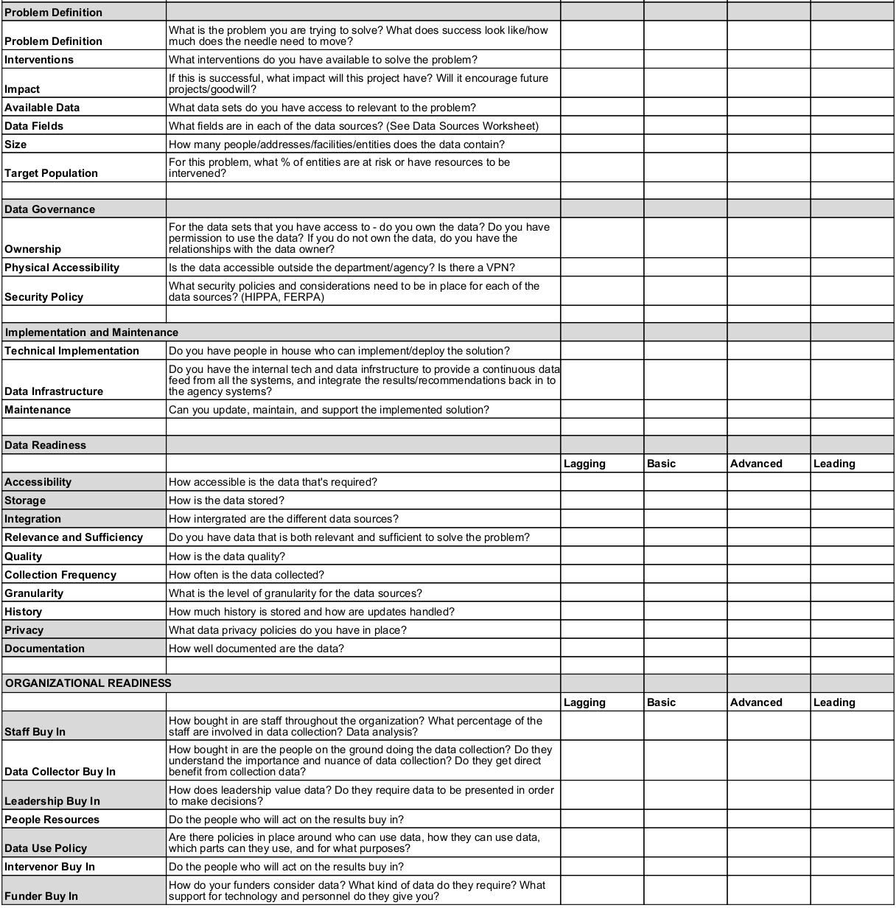
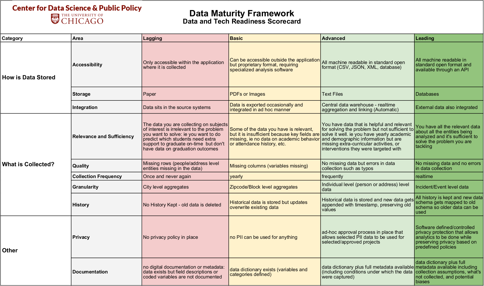
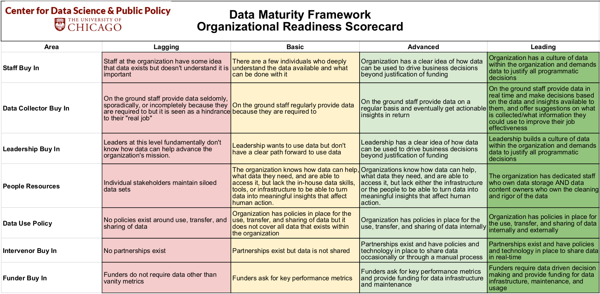
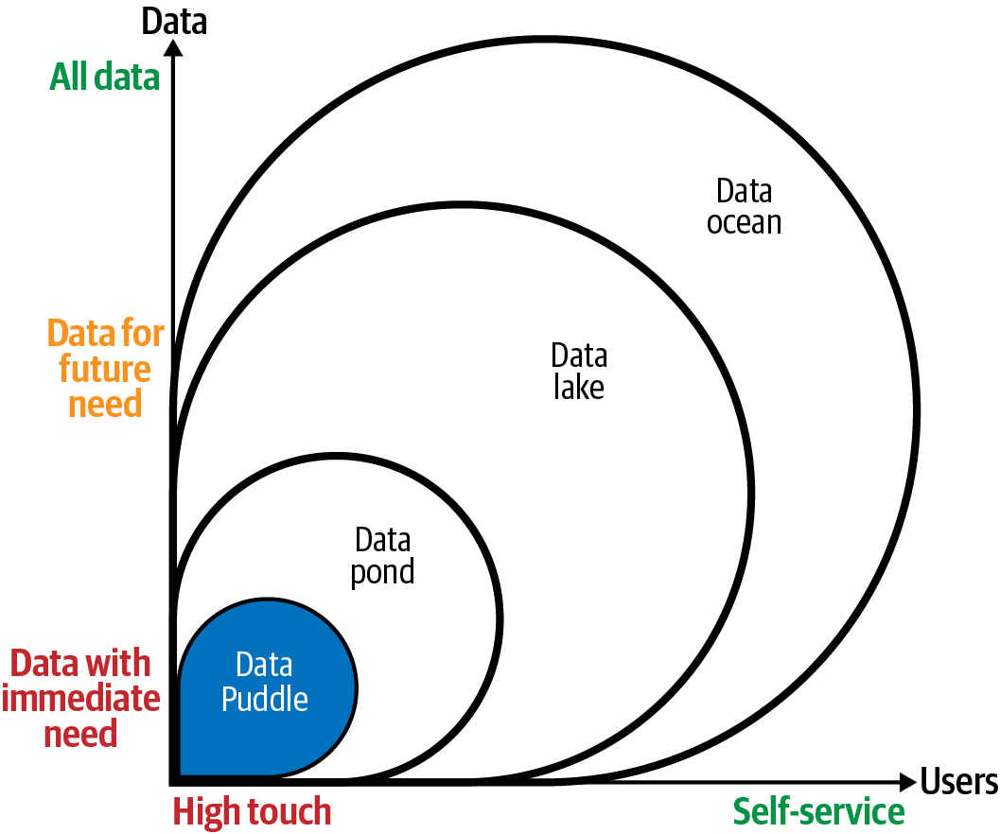
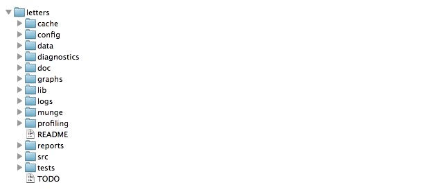
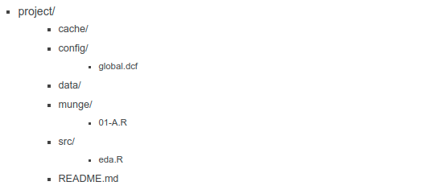

Capítulo 3 CICLO DE VIDA
3.1 Ciclo de un proyecto de Ciencia de Datos

Identificación del problema
- Debemos conocer si el problema es significativo, si el problema se puede resolver con ciencia de datos, y si habrá un compromiso real del lado de cliente/usuario/partner para implementar la solución con todas sus implicaciones: recursos físicos y humanos.

Scoping
El objetivo es definir el alcance del proyecto y por lo tanto definir claramente los objetivos.
Conocer las acciones que se llevarán a cabo para cada objetivo. Estas definirán las soluciones analíticas a hacer.
Queremos saber si los datos con los que contamos son relevantes y suficientes.
Hacer visible los posibles conflictos éticos que se pueden tener en esta fase.
Debemos definir el cómo evaluaremos que el análisis de esos datos será balanceada entre eficiencia, efectividad y equidad.

Adquisición de datos
Adquisición, almacenamiento, entendimiento y preparación de los datos para después poder hacer analítica sober ellos.
Asegurar que en la transferencia estamos cumpliendo con el manejo adecuado de datos sensibles y privados.
EDA
El objetivo en esta fase es conocer los datos con los que contamos y contexto de negocio explicado a través de los mismos.
Identificamos datos faltantes, sugerimos cómo imputarlos.
Altamente apoyado de visualización y procesos de adquisición y limpieza de datos.

Formulación analítica
- Esta fase incluye empezar a formular nuestro problema como uno de ciencia de datos, el conocimiento adquirido en la fase de exploración nos permite conocer a mayor detalle del problema y por lo tanto de la solución adecuada.
Modelado
Proceso iterativo para desarrollar diferentes “experimentos”.
- Mismo algoritmo/método diferentes hiperparámetros (grid search).
- Diferentes algortimos.
Selección de un muy pequeño conjunto de modelos tomando en cuenta un balance entre interpretabilidad, complejidad, desempeño, fairness.
Correcta interpretación de los resultados de desempeño de cada modelo.

Validación
Es muy importante poner a prueba el/los modelo/modelos seleccionados en la fase anterior. Esta prueba es en campo con datos reales, le llamamos prueba piloto.
Debemos medir el impacto causal que nuestro modelo tuvo en un ambiente real.

Acciones a realizar
Finalmente esta etapa corresponde a compartir con los tomadores de decisiones/stakeholders/creadores de política pública los resultados obtenidos y la recomendación de acciones a llevar a cabo -menú de opciones-.
Las implicaciones éticas de esta fase consisten en hacer conciente el impacto social de nuestro trabajo.
3.2 Data Science scoping
El scoping es uno de los pasos más importante en los proyectos de ciencia de datos, es ideal realizarlo con ayuda del cliente, tiene como objetivo definir el alcance del proyecto, definir los objetivos, conocer las acciones que se llevaran acabo, conocer si los datos son relevantes y suficientes, proponer soluciones analíticas, entre otros puntos que se tocaran a continuación.
3.2.1 Data Maturity Framework
Antes de iniciar con el scoping, queremos conocer si los interesados están listos para realizar un proyecto de ciencia de datos. Para ello, una opción es usar el Data Maturity Framework desarrollado en la Universidad de Chicago.
El Data Maturity Framework nos sirve para ver dónde se encuentra la organización en el marco de madurez de datos y cómo mejorar su organización, tecnología y preparación de datos.
Tiene tres áreas de contenido:
Definición del problema
Disponibilidad de datos y tecnología
Preparación organizacional
Esta dividido en tres partes:
- Un cuestionario y una encuesta para evaluar la preparación de la organización.

- Matriz de preparación de datos y tecnología

- Matriz de preparación organizacional

3.2.2 Scoping
Para realizar el scoping podemos apoyarnos del siguiente documento.
Ya que sabemos que la organización esta preparada para realizar un proyecto de ciencia de datos, podemos inicar el scoping, el proceso a seguir es el siguiente:
3.2.2.1 Definir el(los) objetivo(s)
Considerado el paso más importante del proceso, los stakeholders iniciaran con un planteamiento del problema de manera muy general, nuestra responsabilidad será ir aterrizando ideas y definir el problema de manera más concreta, esta parte del scoping puede ocurrir en distintas iteraciones.
Necesitamos hacer que el objetivo sea concreto, medible y optimizable. Cuando se van refinando objetivos, es común que se vaya priorizando por lo que tendremos tradeoffs que irán ligados a las acciones y al contexto del negocio.
3.2.2.2 ¿Qué acciones o intervenciones existen que serán mejoradas a través de este proyecto?
Debemos definir acciones concretas, si esto no ocurre es muy probable que la solución no sea implementada por lo que el proyecto no tendrá uso y no estaráamos haciendo ciencia de datos.
La implementación del proyecto debería ayudar a tener mejor información para llevar acabo estas acciones, es decir, el proyecto mejorará la toma de decisiones basadas en la evidencia de los datos.
Hacer una lista con las acciones ayuda a que el proyecto sea accionable, es posible que estas acciones no existan aún en la organización, por lo que el proyecto puede ayudar a generar nuevas acciones.
Es muy común que la acción definida por el stakeholder sea de muy alto nivel, en ese caso podemos tomar 2 caminos en el scoping:
Proponer en el scoping que el proyecto informe a esa acción general.
Generar a partir de esa acción general acciones más pequeñas.
3.2.2.3 ¿Qué datos tenemos y cuáles necesitamos?
Primero observemos que no se habia hablado de los datos hasta este punto, lo anterior porque debemos primero pensar en el problema, entenderlo y luego ver con qué datos contamos para resolverlo. Si hacemos esto primero seguramente acabaremos desarrollando productos de datos “muertos” y no accionables.
En este paso se le dara uso al Data Maturity Framework, queremos conocer cómo se guardan los datos, con qué frecuencia, en qué formato, en qué estructura, qué granularidad tiene, desde cuándo tenemos historia de estos datos, si existe un sesgo en su recolección, con qué frencuencia recolectan nueva información, sobreescribe la ya existente?
Uno de los objetivos consiste en identificar si la granularidad, frecuencia y horizonte de tiempo en los datos corresponde a la granularidad, frecuencia y horizonte de tiempo de las acciones.
Otro punto importante es saber si los datos con los que se cuenta son relevantes y suficientes para desarrollar el proyecto, se pueden considerar fuentes de datos externa.
3.2.2.3.1 Data Lakes
Un data lake es un repositorio de almacenamiento centralizado que contiene datos de varias fuentes en un formato granular y sin procesar. Puede guardar datos estructurados, semiestructurados o no estructurados, lo que significa que los datos pueden conservarse en un formato más flexible para usarlos en un futuro. Al guardar datos, un data lake los asocia con identificadores y etiquetas de metadatos para poder extraerlos rápidamente.
3.2.2.3.1.1 Niveles de madurez en Data Lake
Data puddle: Repositorio de datos Single-purpose o datos de un solo proyecto (single-project). Este repositorio utiliza tecnologías de “big data”. Los datos que viven en este Data puddle son utilizados normalmente por un solo equipo o en 1 solo proyecto, por lo que el contenido es conocido y entendido por los miembros del equipo.
Data pond: Una colección de al menos 2 data puddle aunque en tecnologías clásicas de almacenamiento de datos como un datawarehouse o un data mart.
Data lake: También contiene al menos 2 data puddle, sin embargo, se diferencia del data pond en dos cosas:
Permite hacer self-service lo que implica que los usuarios de negocio pueden encontrar y usar los datos que viven en el sin tener que depender de la ayuda del departamento de TI.
También tiene datos que los usuarios de negocio pueden querer aunque no haya un proyecto que lo requiera en ese momento.
Data ocean: Expande los servicios que permite el data lake a todos los datos de la empresa habilitando la cultura data driven de la compañía.

3.2.2.4 ¿Cuál es el análisis que necesitamos hacer?
En esta seccion del scoping queremos definir qué tipo de análisis necesitamos hacer con los datos con los que contamos para cumplir con los objetivos definidos y generar las acciones identificadas.
El análisis puede incluir métodos y herramientas de diferentes disciplinas: ciencias computacionales, ciencia de datos, machine learning, estadística, ciencias sociales.
Existen distintos tipops de análisis, los 4 más comunes son:
Descripción: Centrado en entender eventos y comportamientos del pasado. Aunque puede confundirse con business intelligence, debido a que ya definimos objetivos y acciones vamos a desarrollar un producto de datos. Para este tipo de análisis podemos ocupar métodos de aprendizaje no supervisado: clustering.
Detección: Más concentrado en los eventos que están sucediendo. Detección de anomalías.
Predicción: Concentrado en el futuro, prediciendo futuros eventos o comportamientos.
Cambio en comportamiento: Concentrado en entender las causas de cambios en comportamientos de personas eventos, organizaciones, vecindarios, etc.
En esta fase tenemos que responder las siguientes preguntas:
¿Qué tipo de análisis neceistaremos? Puede ser más de uno.
¿Cómo vamos a validar el análisis? ¿Qué validaciones se pueden hacer con los datos existentes? ¿Cómo podemos diseñar una prueba en campo para validar el análisis antes de que pongamos el producto en producción.
Identificar qué acciones se cubren con cada análisis, debemos tener todas las acciones cubiertas.
3.2.2.5 Ejemplos
Los siguientes ejemplos forman parte del trabajo de DSSG, en cada uno de estos planteamientos intentaremos responder las siguientes preguntas:
- ¿Cuál es el objetivo?
- ¿Cómo se mide el objetivo?
- ¿Qué se optimiza?
- ¿Se puede optimizar?
- ¿Cuáles son los tradeoffs?
- ¿Que implicaciones éticas identificas?
Envenenamiento por plomo: Hace unos años, comenzamos a trabajar con el Departamento de Salud Pública de Chicago para prevenir el envenenamiento por plomo. El objetivo inicial era aumentar la eficacia de sus inspecciones de peligro de plomo. Una forma de lograr ese objetivo sería concentrarse en los hogares que tienen peligros de plomo. Aunque fue útil, este enfoque no lograría su objetivo real, que era evitar que los niños se intoxicaran con plomo. Encontrar un hogar con peligros de plomo y repararlo solo es beneficioso si existe una alta probabilidad de que un niño presente (actualmente o en el futuro) se exponga al plomo. La siguiente iteración del objetivo fue maximizar la cantidad de inspecciones que detectan peligros de plomo en hogares donde hay un niño en riesgo (antes de que el niño se exponga al plomo). Finalmente, llegamos al objetivo final: identificar qué niños corren un alto riesgo de intoxicación por plomo en el futuro y luego dirigir las intervenciones a los hogares de esos niños..
High School Graduation: Uno de los mayores desafíos que enfrentan las escuelas hoy en día es ayudar a sus estudiantes a graduarse (a tiempo). Las tasas de graduación en los EE. UU. Son ~65%. Todos están interesados en identificar a los estudiantes que corren el riesgo de no graduarse a tiempo. Al hablar inicialmente con la mayoría de los distritos escolares, comienzan con un objetivo muy limitado de predecir qué niños es poco probable que se gradúen a tiempo. El primer paso es volver al objetivo de aumentar las tasas de graduación y preguntar si hay un subconjunto específico de estudiantes en riesgo que quieran identificar. ¿Qué pasaría si pudiéramos identificar a los estudiantes que tienen solo un 5% de probabilidades de estar en riesgo frente a los estudiantes que tienen un 95% de probabilidades de no graduarse a tiempo sin apoyo adicional? Si el objetivo es simplemente aumentar las tasas de graduación, es (probablemente) más fácil intervenir e influir en el primer grupo, mientras que el segundo grupo puede ser más desafiante debido a los recursos que necesita. ¿El objetivo es maximizar la probabilidad promedio/media/mediana de graduarse para una clase/escuela o es el objetivo enfocarse en los niños con mayor riesgo y maximizar la probabilidad de graduación del 10% inferior de los estudiantes? ¿O el objetivo es crear más equidad y disminuir la diferencia en la probabilidad de graduación a tiempo entre el cuartil superior y el cuartil inferior? Todos estos son objetivos razonables, pero las escuelas deben comprender, evaluar y decidir qué objetivos les interesan. Esta conversación a menudo los hace pensar más en definir analíticamente cuáles son sus objetivos organizacionales, así como las compensaciones..
Inspecciones: Hemos trabajado en varios proyectos que involucraron inspecciones, como con la EPA (Agencia de Protección Ambiental) y el Departamento de Conservación Ambiental del Estado de Nueva York para ayudarlos a priorizar qué instalaciones inspeccionar para detectar infracciones de eliminación de desechos, con la ciudad de Cincinnati para ayudar a identificar las propiedades en riesgo de violaciones del código para prevenir el deterioro -el proceso a través del cual una ciudad que funcionaba anteriormente, o parte de ella, cae en deterioro y decrepitud-, y con el Grupo del Banco Mundial para ayudarlos a priorizar qué denuncias de fraude y colusión investigar. En la mayoría de los problemas de inspección/investigación, hay muchas más entidades (viviendas, edificios, instalaciones, negocios, contratos) para inspeccionar que los recursos disponibles necesarios para realizar esas inspecciones. El objetivo con el que comienzan la mayoría de estas organizaciones es dirigir sus inspecciones a las entidades que tienen más probabilidades de violar las regulaciones existentes. Ese es un buen comienzo, pero la mayoría de estas organizaciones nunca pueden inspeccionar todas las instalaciones/hogares que pueden no cumplir con las normas, por lo que el objetivo que realmente buscan es la disuasión: reducir la cantidad total de instalaciones que estarán en violación. Un proceso de inspección ideal resultaría entonces en la reducción del número real de violaciones (encontradas o no), lo cual puede no ser lo mismo que un proceso de inspección que tiene como objetivo ser eficiente y aumentar la tasa de aciertos (% de inspección que resulta en violaciones).
Programación de la recolección de residuos: Recientemente comenzamos a trabajar con Sanergy, una empresa social con sede en Kenia. Implementan inodoros portátiles en asentamientos urbanos informales y uno de sus mayores costos es contratar personas para vaciar los inodoros. Hoy en día, todos los inodoros se vacían todos los días, aunque existe una variación en cuánto se usan y cuánto se llenan. Para que puedan crecer y mantener bajos los costos, necesitan un enfoque más adaptable que pueda optimizar el cronograma de vaciado de los inodoros. El objetivo en este caso es asegurarse de no vaciar demasiado el inodoro cuando no está lleno, pero tampoco dejar que permanezca lleno porque entonces no se puede usar. Esto se traduce en una formulación que presiona para vaciar el inodoro lo más cerca posible de estar lleno al 100% sin llegar al 100%.
3.3 Orden y estructura de proyecto
Resulta elemental contar con una adecuada estructura de carpetas que permitan al analista mantener orden y control a lo largo de todo el proyecto. Gran parte del caos en los problemas de analítica de datos nace desde el momento en que no se sabe en donde ubicar cada uno de los archivos necesarios para el proyecto.
3.3.1 Plantilla de estructura proyecto
En esta sección, se presenta una introducción a la librería ProjectTemplate, la cual facilita una estructura predeterminada que ayudará como punto de partida para mantener orden y control en cada momento del proyecto.
library(ProjectTemplate)
ProjectTemplate::create.project(project.name = 'intro2dsml', rstudio.project = T)ProjectTemplate::create.project() creará toda la estructura de carpetas para un nuevo proyecto. Configurará todos los directorios relevantes y sus contenidos iniciales. Para aquellos que solo desean la funcionalidad mínima, el argumento de template se puede establecer en minimal para crear un subconjunto de directorios predeterminados de ProjectTemplate.

cache: En esta carpeta se almacenarán los datos que desear cargarse automáticamente cuando se cargue la sesión del proyecto.
config: Se realiza la configuración de R y su sesión, la cual será establecida cada que se abra el proyecto.
data: Se almacenan las fuentes de información crudas necesarias en el proyecto. En caso de encontrarse codificadas en algún formato de archivo soportado por la librería, automáticamente serán cargadas a la sesión con la función
load.project()diagnostics: En este folder puedes almacenar cualquier script usado para realizar diagnósticos sobre los datos. Es particularmente útil para al análisis de elementos corruptos o problemáticos dentro del conjunto de datos.
doc: En este folder puede almacenarse cualquier documentación que haya escrito sobre el análisis. También se puede usar como directorio raíz para las páginas de GitHub para crear un sitio web de proyecto.
graphs: Sirve para almacenar las gráficas producidas por el análisis
lib: Aquí se almacenarán todos los archivos que proporcionen una funcionalidad útil para su trabajo, pero que no constituyan un análisis estadístico per se. Específicamente, debe usar el script lib/helpers.R para organizar cualquier función que use en su proyecto que no sea lo suficientemente general como para pertenecer a un paquete. Si tiene una configuración específica del proyecto que le gustaría almacenar en el objeto de configuración, puede especificarla en lib/globals.R.
logs: Aquí puede almacenarse un archivo de registro de cualquier trabajo que haya realizado en este proyecto. Si va a registrar su trabajo, se recomienda utilizar el paquete log4r, que ProjectTemplate cargará automáticamente si activa la opción de configuración de registro. El nivel de registro se puede establecer a través de la configuración logging_level en la configuración, el valor predeterminado es “INFO”.
munge: En este folder puede almacenarse cualquier código de preprocesamiento o manipulación de datos para el proyecto. Por ejemplo, si necesita agregar columnas en tiempo de ejecución, fusionar conjuntos de datos normalizados o censurar globalmente cualquier punto de datos, ese código debe almacenarse en el directorio munge. Los scripts de preprocesamiento almacenados en munge se ejecutarán en orden alfabético cuando se llame a la función load.project(), por lo que debe anteponerse números a los nombres de archivo para indicar su orden secuencial.
profiling: Aquí puede almacenar cualquier script que use para comparar y cronometrar su código.
reports: Aquí puede almacenar cualquier informe de salida, como versiones de tablas HTML o LaTeX, que produzca. Los documentos de sweave o brew también deben ir en el directorio de informes.
src: Aquí se almacenarán los scripts de análisis estadístico finales. Debe agregar el siguiente fragmento de código al comienzo de cada secuencia de comandos de análisis:
library('ProjectTemplate); load.project(). También debe hacer todo lo posible para asegurarse de que cualquier código compartido entre los análisis en src se mueva al directorio munge; si lo hace, puede ejecutar todos los análisis en el directorio src en paralelo. Una versión futura de ProjectTemplate proporcionará herramientas para ejecutar automáticamente cada análisis individual de src en paralelo.tests: Aquí puede almacenarse cualquier caso de prueba para las funciones que ha escrito. Los archivos de prueba deben usar pruebas de estilo testthat para que pueda llamar a la función
test.project()para ejecutar automáticamente todo su código de prueba.README: En este archivo, debe escribir algunas notas para ayudar a orientar a los recién llegados a su proyecto.
TODO: En este archivo, debe escribir una lista de futuras mejoras y correcciones de errores que planea realizar en sus análisis.
Si algunas o todas estas carpetas resultan innecesarias, puede comenzarse con una versión simplificada a través del comando:
create.project(project.name = 'intro2dsml', template='minimal')
3.3.2 Reproducibilidad
Trabajar de esta manera permitirá que un proyecto sea reproducible por cualquier persona con el acceso y los permisos adecuados para colaborar. Sin importar que existan nuevas versiones de R o sus librerías, este ambiente virtual creado será reisiliente a tales cambios, permitiendo que el proyecto perdure a lo largo del tiempo.
library(renv)
renv::init()renv::init() inicializa un nuevo entorno local de proyecto con una biblioteca R privada. La función renv::init() intenta garantizar que la biblioteca del proyecto recién creada incluya todos los paquetes de R utilizados actualmente por el proyecto. Lo hace rastreando archivos R dentro del proyecto en busca de dependencias. Los paquetes descubiertos luego se instalan en la biblioteca del proyecto, que también intentará ahorrar tiempo copiando paquetes de la biblioteca del usuario (en lugar de reinstalarlos desde CRAN) según corresponda.
Al usar renv, es posible “salvar” y “cargar” el estado de las librerías del proyecto a través de las siguientes funciones:
renv::snapshot() guarda el estado del proyecto en el archivo renv.lock
renv::restore() Restablece el estado del proyecto desde la última actualización de renv.lock.